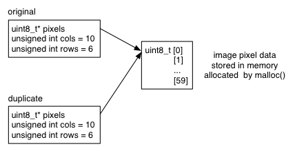

Lab 5: Composite Data Types
struct and typedef; malloc() practice


Goals
After this lab you will be able to
- Create and use structured composite data types with typedef and struct.
- Implement an interface to a data collection using structures.
Setup
In the terminal:
- From your local repo, create and 'git add' the new directory '5', then make '5' your working directory. (Exact commands ommitted - you should know how to do this by now. Refer to earlier labs if necessary.)
- Fetch the header file intarr.h containing Lab 5 tasks.
Guide
Structures
It is often useful to collect multiple data items together into a single logical entity: a composite data type. For example, consider the raster images from Lab 3, each described by a pointer to an array of data, a width and height. All three items are required to interpret the encoded image. Most languages provide a mechanism to collect such a set into an object called a structure or class. C provides the struct keyword for this purpose. For example:
struct {
uint8_t* pixels;
unsigned int cols;
unsigned int rows;
} img;
This declaration creates a new variable called img, that collects the variables we need for one image.
The components, called fields or members, of the structure are accessed using "dot" syntax, so we can initialize our image like so:
img.cols = 640; img.rows = 480; img.pixels = malloc( img.cols * img.rows * sizeof(uint8_t));
The structure is implemented in the simple and fast sort of way you would expect from C. It is just a chunk of memory with space for all its fields. The dot syntax is interpreted at compile time as a number of bytes offset from the structure's base address, so these things are true:
sizeof(img) == sizeof(uint8_t*) + sizeof(unsigned int) + sizeof(unsigned int) &img.pixels == (void*)&img + 0 &img.cols == (void*)&img + sizeof(uint8_t*) &img.rows == (void*)&img + sizeof(uint8_t*) + sizeof(unsigned int)
(void*) signifies "pointer of unspecified type".
This means that C structures have almost no overhead on CPU or memory use at run-time.
An occasion when this is not quite true is that the compiler may add some empty space called padding between fields so that each field starts at the CPU's favoured memory alignment boundary. Most modern CPUs are fastest when accessing memory at 4- or 8-byte boundaries. Inserting padding wastes a little bit of memory. Unless memory is very tight we usually ignore these details. (Our example structure contains an 8-byte pointer (assuming a 64bit OS), and two 4-byte unsigned integers: all integer multiples of 4 bytes, so it contains no padding.)
More information on memory alignment, including padding can be found here. See this article to understand padding and strategies for avoiding it.
Typedef
The struct keyword as used above creates just one instance of a variable. Since we may want to create lots of images, or pass pointers to them into functions, we can create a new type based on our structure definition using the typedef keyword:
typedef struct {
uint8_t* pixels;
unsigned int cols;
unsigned int rows;
} img_t;
With the typedef prefix, instead of declaring a variable, we have declared a new type called img_t. It is conventional to use "_t" as a suffix on defined types. Having defined a type, we can create instances of it on the stack as shown below, creating two variables of type img_t, and a pointer-to-img_t. As the example shows, once typedef'd we can use our new type just like we use int, char, etc.
typedef struct {
uint8_t* pixels;
unsigned int cols;
unsigned int rows;
} img_t;
img_t img1;
img_t img2;
img_t* imgptr = &img1;
Allocating structures on the heap
Like any other type, space can be allocated for structures on the heap with malloc(). The sizeof() macro also works as it does for any other type, so the heap-allocation process looks very familiar:
img_t* imgptr = malloc( sizeof(img_t) );
This is an important mechanism because it allows functions to return pointers to newly-created structures. Recall from Lab 3 that returning pointers to local variables like this:
// ... img_t img; return &img; // OOPS! }is a serious bug as the stack memory allocated for variable img is freed when the function returns. Returning a pointer to heap memory provided by malloc() is safe:
// ...
img_t* imgptr = malloc( sizeof(img_t) );
if( imgptr == NULL )
{
printf( "Warning: failed to allocate memory for an image structure\n" );
}
return imgptr; // safe to return a pointer provided by malloc()
}
Pointer indirection
There is one more bit of syntax to learn: how to access the fields of a structure through a pointer. We have two choices: either "look inside" the pointer using the normal '*' syntax (also known as 'dereferencing' a pointer), followed by the dot syntax to access the field:
unsigned int width = (*imgptr).cols;
The parentheses are necessary, since the '.' operator has precedence over the '*' operator.
Alternatively we can use the indirection arrow syntax to "look through" the pointer:
unsigned int width = imgptr->cols;
These two are exactly equivalent. The indirection arrow is arguably neater and is preferred.
User-defined types as function arguments
You may use any defined type for function arguments and return values, for example something like this:
void draw_image( uint8_t* pixels,
unsigned int cols,
unsigned int rows )
{ ... }
// call the function above
draw_image( arr, w, h );
Can be considerably simplified by passing in a pointer to a structure describing the image:
void draw_image( img_t* img )
{ ... }
// call the function above
draw_image( &img1 );
Note that we could pass a structure itself as an argument, as follows:
void draw_image( img_t img_copy )
{ ... }
// call the function above - BAD!!!
draw_image( img1 );
but since arguments are passed by value in C, the C function draw_image would then receive a copy of the actual value of the argument img1. This is not a good idea. Why? Because, if this structure is large (which is probably the case since it represents an image), it will take time and memory space to copy it. Also, if the function called (here: draw_image) modifies the data in the structure, the modifications will not be reflected in the argument (here: img1) once the execution flow returns to the code that called the function draw_image.
Conclusion: Passing a pointer to a structure is the most efficient way of calling a function with structures as arguments.
Shallow-copying entire structs by assignment
When a structure variable is assigned, as on line 6 below, the structure on the right-hand-side of the assignment is copied byte-for-byte into the variable on the left-hand-side.
img_t original; original.cols = 32; original.rows = 32; original.pixels = malloc( originals.cols * original.rows * sizeof(uint8_t) ); img_t duplicate = original; assert( duplicate.rows == original.rows ); // always true assert( duplicate.cols == original.cols ); // always true assert( duplicate.pixels == original.pixels ); // always true
Note that in this example, the original.pixels and duplicate.pixels fields have the same value as they both contain the same memory address (the memory address of the array pixels). In other words, they point to the same array of pixels obtained by return from malloc() on line 4: the array is not duplicated, we just have two identical pointers to it. This is known as a shallow copy, and illustrated in the figure below. Be very careful when copying structures that contain pointers, since this may not be the behaviour you want.

Also be aware that if you free( original.pixels ) any subsequent use of the duplicate.pixels pointer is a bug, since the memory it points to has been freed. Having more than one copy of a pointer is called pointer aliasing, and is a notorious source of bugs. If possible, avoid having more than one copy of a pointer.
Deep copy
In order to duplicate the whole image including pixel data, we need to malloc() more space on the heap and copy the original pixel data into it. Duplicating all the data referenced by a struct and not just the struct fields themselves is known as a deep copy. Our img_t can be deep-copied thus:
img_t original; original.cols = 32; original.rows = 32; original.pixels = malloc( originals.cols * original.rows * sizeof(uint8_t) ); img_t duplicate = original; // start with a shallow copy // allocate a new pixel array to perform a deep copy unsigned int numbytes = duplicate.cols * duplicate.rows * sizeof(uint8_t); duplicate.pixels = malloc( numbytes ); // and copy numbytes from the original array to the new array // (see man memcpy for usage) memcpy( duplicate.pixels, original.pixels, numbytes );
After this code runs, original and duplicate have the same values in their cols and rows fields, but different pointer values, i.e., different memory addresses, in their pixels field, as illustrated:

Arrays of structs
Arrays of typedef'd structs work in the same way as any other type:
// small array on the stack img_t imgarr[100]; imgarr[43].cols = 640; unsigned int width = imgarr[43].cols; // large array on the heap img_t* thousand_images = malloc( 1000 * sizeof(img_t) );
When to use typedef struct
Deciding when to create a new structured type is an important part of program design. Your type choices can have effects throughout your code. Some rules of thumb:
You should probably use a struct when a set of variables must always appear together, and/or are jointly responsible for something, e.g. interpreting an encoding in our image example.
You should probably use typedef when you need to declare more than one instance of a structure, and when using a structure for function arguments, since the resulting code is easier to read.
Tasks [1:8]
Requirements
Your task is to implement the integer array functions declared and specified in the supplied header file intarr.h. These are introduced in the guided part of the lab.
Your implementation of these functions must be entirely contained in a C source file called intarr.c (full path inside your repo: 5/intarr.c).
Incrementally develop these functions. To do so, you need to:
- 'Stub' each function: to know how to do this, see 'Lab 5 Incremental Development and Helpful Tips' and 'Lab 5 Demo' posted on our course web site.
- Create a test driver: a program with a main function from which each of the functions created in intarr.c are called (tested). Start by having your testDriver.c calling the functions of Task 1.
- Compile and execute your intarr.c (with stubs) and your test driver. Note that for this first iteration, your test driver is calling two functions that have been stubbed (functions without a body).
- If your code compile, then implement these two functions of Task 1.
- Compile an execute your test driver. Note that this time, your test driver is testing the functions you have implemented for Task 1. Are these functions working as expected? Yes? Then submit your intarr.c to your Git repo.
- Repeat the above two steps until all functions have been designed, implemented, tested and submitted to your Git repo. Don't forget to keep adding appropriate function calls to your test driver.
Do Task 7 before doing Task 6.
Important: DO NOT add a main() function to intarr.c. This will prevent the grading robot from linking the file. The main() function must be in your test driver.
Important: DO NOT modify intarr.h: the server will use the file as supplied to you. In particular, your function definitions must match the declarations given in intarr.h.